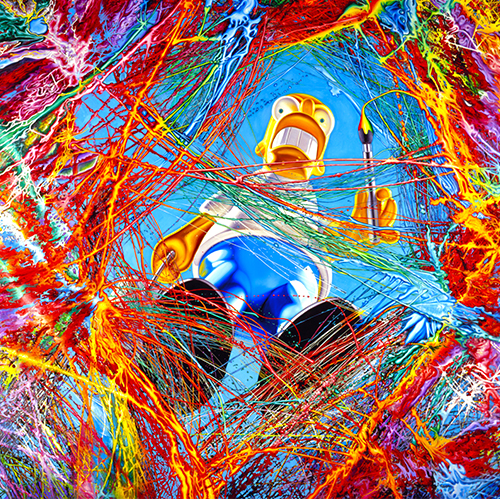

Exhibitions
Bipolar Surrealism, Opera Gallery, New York, New York, US, May 24–June 11, 2001.
Literature
Ron English, Abject Expressionism: The Art of Ron English (San Francisco: Last Gasp, 2002), p.106. ISBN 978-0867196894.
Notes
In Abject Expressionism, this work was erroneously reported as 278x78 inches.
This work references the character Homer Simpson. Representative image: here .